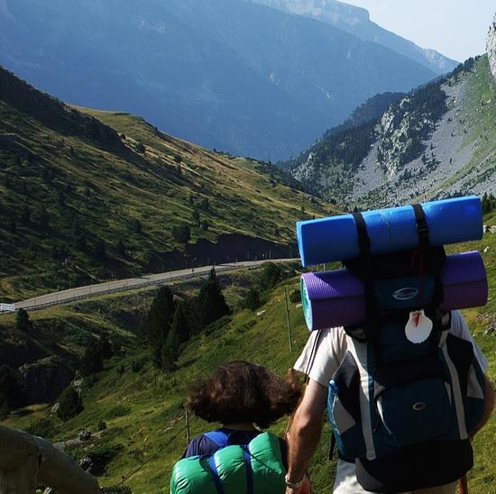
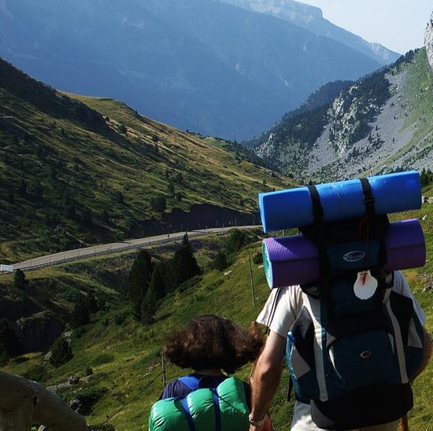

NUESTRA EMPRESA
UNA HISTORIA DE VIAJES
"Viajar es revivir", dijo el poeta italiano Dante Alighieri en el siglo XIII. Y claro que lo es, cuando viajamos, nuestra mente, cambia; todo nuestro ser se modifica con las experiencias ganadas y los sentimientos adquiridos en el camino. Viajar, es sobre todo, conocerse a uno mismo. Nuestro viaje comienza hace 700 años en las llanuras de Aragón, cuando nuestros antepasados organizaban las primeras excursiones al Camino de Compostela. En esos viajes, peligrosos, pero llenos de vastas experiencias religiosas y humanas, se gestó una aventura increíble que llega hasta el presente.
Hace un siglo, en el año 1920, llegó al país, el inmigrante aragonés José López, y fundó la empresa "MARTE: Agencia de Viajes". Con el correr del tiempo, su sacrificio y tesón, le devolvieron un negocio familiar que es orgullo para todos los argentinos que alguna vez viajaron y experimentaron ese revivir en los miles de viajes alrededor del mundo.
Hoy honramos ese legado, y agradeciendo a todos nuestros pasajeros y viajeros amigos, les decimos: "MARTE", ¡Adelante, a viajar al futuro!
Familia López y Asociados
 
